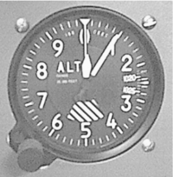
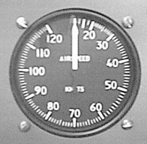
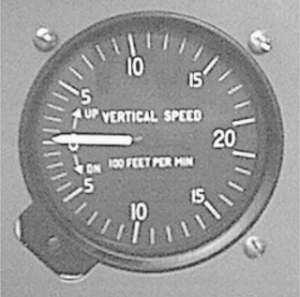
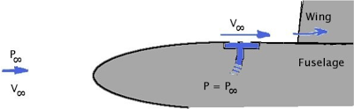
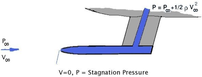
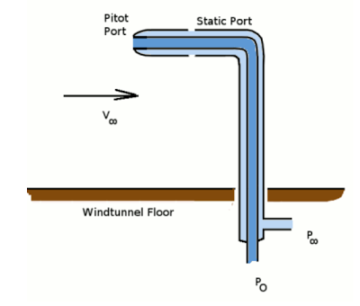

AIRCRAFT INSTRUMENTS
Several primary flight instruments of many aircraft rely on direct measurement of aerodynamic pressure to predict the altitude, airspeed and climb rate of the aircraft. Other primary instruments rely on the effects of gyroscopic motion to measure rates of pitch, roll and yaw or aircraft attitude. These instruments use simple mechanical means to display information to the pilot. Schematic diagrams and explanations of the working of these instruments are shown below.
Altimeter
The altitude of an aircraft can be obtained by using a measurement of the static pressure of the surrounding atmosphere. A single pressure line from the Static Port is all that is required as input for the instrument. Although the rate of change of pressure with altitude is well known, based on an International Standard Atmosphere model, the ambient sea level pressure at any location of the earth’s surface can vary from day to day due to meteorological conditions. The instrument will require zeroing before and sometimes during the flight. This is done by setting the instrument to the ambient pressure of the airport at the start of the flight and resetting as required. It is therefore important to remember that this instrument measures height above sea level and not height above current ground location. For accuracy of measurement the instrument usually has at least two sometimes three indicator needles operating on different scales. For the instrument shown the larger needle indicates 100’s of feet and the smaller 1000’s of feet. Ambient sea level pressure preset value is shown in the rectangular box on the right (measured in HectoPascals). Click on the Altimeter image to view a schematic diagram showing its internal operation.
Airspeed Indicator
The airspeed of an aircraft can be obtained from the difference between atmosphere static pressure and the measured total pressure from a pitot tube placed in the airflow. The two pressures required come from lines to the Static Port and an second to the Pitot Port. The difference between these pressures is the dynamic pressure created by the motion of the vehicle through the air.
$\text"Dynamic Pressure"=1/2ρV^2$
where V is the velocity of the aircraft and ρ is the density of the surrounding air.
As the instrument does not have information on the actual density of the air at the aircraft’s altitude, an assumed standard sea level density is used (1.225 Kg/m3). The true airspeed may be significantly higher as the ambient density at the altitude will be lower than the sea level value. A correction will need to be made to calculate true airspeed.
At high speed, where the surrounding air is compressed by the motion of the vehicle, the assumed sea level standard density will again be inaccurate and a further correction for compressibility must be made to the measurement reading.
IAS (indicated airspeed) → EAS (equivalent airspeed) : correction for compressibility
EAS → TAS (true airspeed) : correction for altitude.
$$TAS=EAS √{ρ_{ssl}/ρ}$$
The instrument only measures speed relative to the surrounding air so actual ground speed will need to be calculated based on prevailing wind conditions. The instrument shown gives a reading of indicated airspeed in knots (nautical miles per hour). Click in the image of this instrument to see a schematic diagram showing its operation.
Vertical Speed (Climb/Descent Rate)
The vertical speed indicator shows the current rate of climb or descent of the vehicle in feet per minute. It is feed from a pressure line from the Static port in a similar fashion to the altimeter. However this instrument does not measure the absolute pressure but the rate at which the surrounding static pressure is changing. Its internal metering system is calibrated to give the rate of change of altitude equivent to the measured rate of change of pressure.Click on the image of this instrument to see a schematic diagram showing its internal operation.
Static Port
The pressure of the surrounding atmosphere is obtained through a flush mounted static port. This is usually located on the side of the fuselage in a position which will have a local surface pressure which is closely matching the stream ambient atmospheric air pressure. The position must be calibrated and not where there is significant pressure change due to the pressure field of the wings, flow separations from joins or protrusions on the fuselage, propellor slipstream or jet wake effects.
Pitot Port
A pitot tube is used to measure the kinetic energy of the airflow due to the motion of the aircraft. The tube protrudes into the airstream and is aligned with the flow. The airstream impacting on the open end of the tube is brought to rest. The pressure at this opening will thus be the sum of the static pressure of the stream and its dynamic pressure. This is the total pressure of the flow field.
Pitot-Static Probe
In some cases, especially for wind tunnel laboratory work, the pitot and static ports are merged into a single unit, the pitot-static probe. The two tubes one inside the other can supply both the stream static pressure and the stream stagnation pressure to a measurement system.
Turn and Bank Indicator
 In order to determine rate of turn and correct balance for the bank angle required for a turn this instrument combines two separate measurements.
In order to determine rate of turn and correct balance for the bank angle required for a turn this instrument combines two separate measurements.
The first is a simple curved tube filled with liquid, in which sits a ball with reasonable mass. The ball will position itself in the tube depending on the resultant local acceleration vector. In steady level flight this will be just due to the effect of gravity and the ball will sit in the center. For a balanced turn the resultant of the gravity vector and the angular acceleration vector will still keep the ball in the center. If the ball is off centre then the accelerations are not aligned correctly with the aircraft fuselage and a sliding or slipping turn will result. The rate of turn is measured by a gyroscope inside the instrument. Click on the Turn and Bank Indicator image to see a schematic view of the gyroscope and its operation.